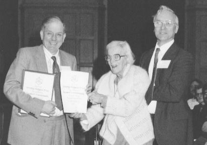

INFORMATION about Dorothy Crowfoot Hodgkin
Information about Dorothy Crowfoot Hodgkin
Dorothy Hodgkin
born Cairo May 12, 1910
died Oxfordshire July 30, 1994

Professor Dorothy Crowfoot Hodgkin
Vice President 1992 - 1996, presenting the 1st Dorothy Hodgkin prize
on the occasion of her 80th birthday.
web site:
http://www.physics.ucla.edu/~cwp/ AIP Contributions of women to
Physics in 20th century, including crystallographers such as Dorothy Hodgkin
This file last updated 31 Dec 2000
BCA Home page WebMaster
BCA@ISISE.RL.AC.UK
 Click here to return to BCA homepage
Click here to return to BCA homepage